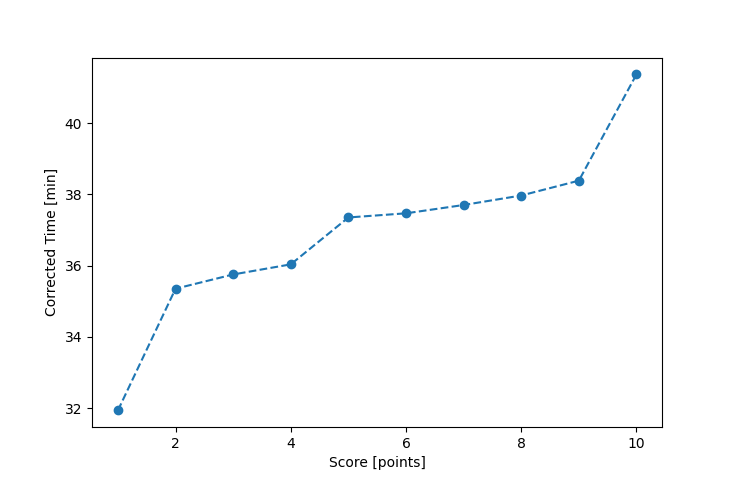

| Wind: | 2-3 (BFT) |
|---|---|
| RC: | Ron_F |
| Date: | September 18, 2016 |
| Notes: | M |
| Rank / Score | Name | Boat | Input Time [mm:ss] | Input Offset [mm:ss] | Race Time [mm:ss] | Race Time [s] | Handicap | Corrected Time [s] | Corrected Time [mm:ss] |
|---|---|---|---|---|---|---|---|---|---|
| 1.0 | Mike_F | SF | 32:04 | 00:00 | 32:04 | 1924 | 1.00400 | 1916 | 31:56 |
| 2.0 | Lewis_V | BCN | 30:45 | 00:00 | 30:45 | 1845 | 0.87000 | 2121 | 35:21 |
| 3.0 | Bill_P | SF | 35:54 | 00:00 | 35:54 | 2154 | 1.00400 | 2145 | 35:45 |
| 4.0 | Pat_B | WF | 33:03 | 00:00 | 33:03 | 1983 | 0.91700 | 2162 | 36:02 |
| 5.0 | Art_M | SWSX | 35:49 | 00:00 | 35:49 | 2149 | 0.95900 | 2241 | 37:21 |
| 6.0 | David_Bu | SF | 37:37 | 00:00 | 37:37 | 2257 | 1.00400 | 2248 | 37:28 |
| 7.0 | Ralph_H | SF | 37:51 | 00:00 | 37:51 | 2271 | 1.00400 | 2262 | 37:42 |
| 8.0 | Anita_M | HLR14 | 42:24 | 00:00 | 42:24 | 2544 | 1.11700 | 2278 | 37:58 |
| 9.0 | Chris_E | SF | 38:32 | 00:00 | 38:32 | 2312 | 1.00400 | 2303 | 38:23 |
| 10.0 | Nedra_F | SF | 41:32 | 00:00 | 41:32 | 2492 | 1.00400 | 2482 | 41:22 |

Application Notes:
All race results are unofficial
View source code at https://github.com/cessnao3/portsmouthracecalc/